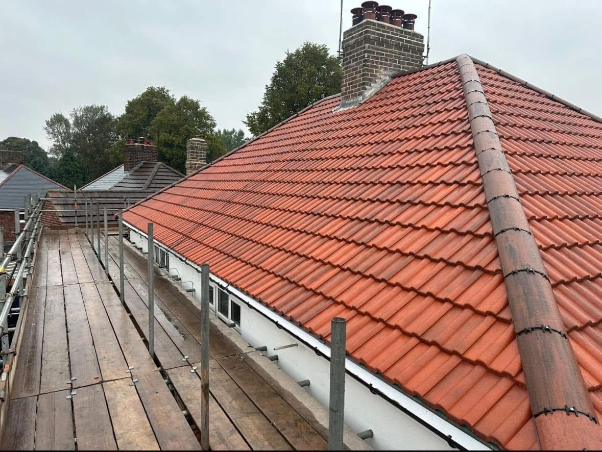

Re-bedding ridge and verge tiles, repointing chimney stacks and renewing failed mortar in brick and stone — sealing out damp before frost drives the problem deeper.
Repointing is the process of raking out old, cracked or missing mortar from between bricks, stones or ridge tiles and replacing it with fresh mortar. It sounds straightforward, but done properly it's one of the most effective things you can do to keep water out of a building — and done badly, or left too long, it becomes an expensive problem.
Storm Guard Roofing & Building carries out repointing across Dundee, Perth and Angus on everything from roof ridges and verges to chimney stacks, gable ends, and stone walls. We assess the right mortar for the job first, so the repair works with the building rather than against it.
When mortar joints crack, crumble or fall away, water finds a path in. In Scotland's climate that water freezes in winter, expanding as it does so and widening the joint further. Each freeze-thaw cycle makes it worse — what starts as a hairline crack becomes a gaping joint, loose tiles and, eventually, damp inside. Tackling failed mortar early is always cheaper than waiting until it has caused structural damage.
Mortar choice matters more than most people realise. Modern brickwork is built to work with cement-based mortars — they're hard, durable and do the job well. But traditional and period stone properties are a different matter. Old stone is soft and porous; it was built to breathe, with lime mortar that allows moisture to move through the wall and evaporate. Use cement on old stone and you seal that moisture in. It has nowhere to go, so it drives through the stone itself, causing spalling, damp and long-term structural damage.
We'll assess the building and advise on the right mortar before any work starts, so the repair lasts and doesn't create a worse problem down the line.
A recent Storm Guard job:

Repointing rarely happens in isolation. Loose ridge tiles often mean the roof needs a broader check — slipped tiles or failing underlays can be letting water in from other directions too. Around chimneys, fresh repointing works hand in hand with renewing leadwork and flashing: there's little point repointing a stack if the lead flashing is lifting and letting water straight back in behind it. We look at the whole picture and flag anything else that needs attention while we're up there.
Call or WhatsApp us a photo of the problem so we can assess it quickly.
We check the roof properly and find the true cause — not just the symptom.
You get a clear, written price. No surprises, no pressure.
We carry out the repair, tidy up, and back it in writing.
Repointing is raking out old, cracked or missing mortar from between bricks, stones or ridge tiles and replacing it with fresh mortar. It seals the joints and keeps water out.
If the ridge tiles along the top of the roof are loose, lifting, or you can see gaps and missing mortar, they need re-bedding and repointing before wind or water gets under them.
It depends on the property. Modern brickwork is usually fine with cement mortar, but traditional and period stone needs breathable lime mortar — cement can trap moisture and damage old stone. We'll advise on the right one.
Often, yes — if the damp is getting in through failed mortar joints. We'll check the cause first so we fix the real problem, not just the symptom.
Every winter that failed mortar is left open, frost pushes the damage further. Get it repointed now and stop the problem before it spreads — free quotes across Dundee, Perth and Angus.